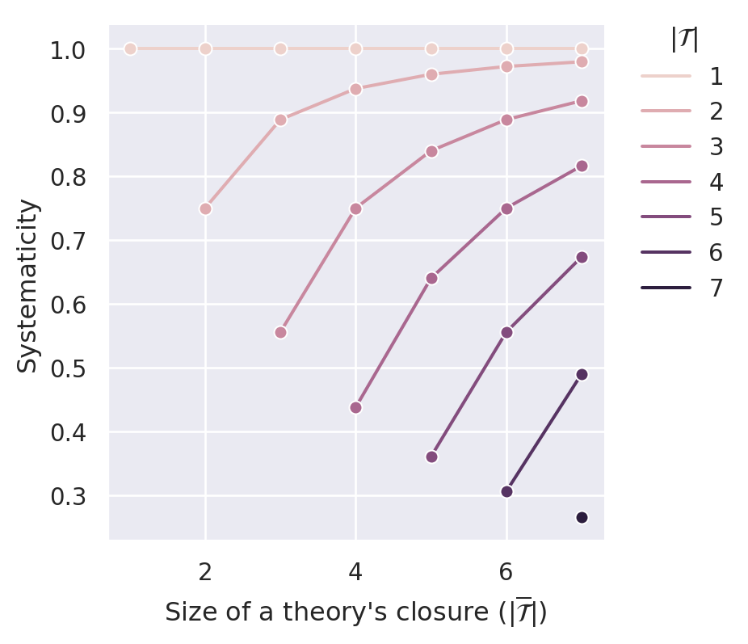
Appendix C — Alternative Systematicity Measures
In this appendix, we will point to some shortcomings of the systematicity measure used in Beisbart, Betz, and Brun (2021) and discuss several alternative measures.1
C.1 Desiderata for systematicity measures
C.1.1 D1 – Content
The achievement function models the trade-off between the three desiderata account, faithfulness and systematicity. The latter is supposed to measure the extent of a theory’s ability to systematize sentences from the given sentence pool \(\mathcal{S}\). The formulation is admittedly in need of explication. Beisbart, Betz, and Brun (2021) used the following definition for their RE model:
\[ S_{BBB}(\mathcal{T}) = 1-\left(\frac{\vert \mathcal{T}\vert -1}{\vert\overline{\mathcal{T}}\vert }\right)^2 \tag{C.1}\]
with \(\mathcal{T}\) being a set of sentences representing the principles of the theory and \(\overline{\mathcal{T}}\) being the dialectical closure of \(\mathcal{T}\) (i.e., all implications of \(\mathcal{T}\) according to some dialectical structure \(\tau\)).
The underlying idea is simple. The more content a theory has (as, for instance, measured by the amount of its implications), the more sentences it systematizes. Hence, we should require:
Content (D1): Everything else being equal, systematicity should (monotonically) increase with increasing content.
C.1.2 D2 – Simplicity
This simple suggestion is, however, in need of refinement. The systematizing power of a theory should be evaluated in relation to its size. If a theory implies many sentences only because it contains many sentences as its principles, its systematizing power should be considered low. The reason is that systematization is usually thought of as somehow summarising a lot with little. Theories in physics systematize empirical facts to the extent that they imply a lot of these facts by using but few physical laws (as, for instance, Newton’s three laws of motion).
These considerations motivate:
Simplicity (D2): Everything else being equal, systematicity should (monotonically) increase with decreasing theory size.
How does the suggested measure \(S_{BBB}\) conform to these constraints? In our modelling context, a theory is simply a set of sentences, which you can think of as its principles or some axiomatic basis. Accordingly, the size of a theory can be measured by \(\vert \mathcal{T} \vert\) in Equation C.1. There are different possibilities for conceptualizing the notion of content. One suggestion is to equate the dialectical closure of a theory (\(\overline{\mathcal{T}}\)) with its content.
Since the sentence pool is finite, so is the dialectical closure of a theory.2 Accordingly, we can measure the size of a theory’s content by \(|\overline{\mathcal{T}}|\).
The bracketed term in Equation C.1 can be considered as a penalizing contribution, which increases with the theory’s size (\(\vert \mathcal{T} \vert\)) and decreases with the theory’s content size (\(\vert \overline{\mathcal{T}} \vert\)). Figure C.1 illustrates systematicity values calculated by \(S_{BBB}\) for a sentence pool of size \(14\).3
By following vertical lines (constant theory closure size), you can see that everything else being equal, “smaller” theories receive higher systematicity values. Hence, \(S_{BBB}\) satisfies D2 (simplicity). By following the plotted lines (constant theory size), you can see that \(S_{BBB}\) satisfies D1 (content) for all theory sizes except for \(\vert \mathcal{T} \vert = 1\). As noted before (see Chapter 7), these singleton theories receive the maximal systematicity value of \(1.0\) independent of their content.
How problematic is this violation of D1? After all, D1 is only violated for singleton theories and only violated in a “weak” sense. While it is true that systematicity does not monotonically increase with increasing content for singleton theories, systematicity does at least not decrease with increasing content. In Chapter 7, we observed that fixed points and global optima frequently maximize the standard measure of systematicity (with singleton theories). In Appendix B, we presented a preliminary analysis of how pervasive fixed points and global optima are that consist of a singleton theory and a single commitment. The sparse emergence of such “trivial” endpoints suggests that singleton theories (with extremely low content) do not have a significant advantage over other theories. But this does not mean that the violation of D1 could not lead to problematic behavior of the model in other contexts. We should, therefore, consider and analyze other systematicity measures, which we intend in this appendix.
C.1.3 D3 – Minimal Systematicity
There are other constraints as well: Due to the assumption that the sentence pool is finite, there are lower bounds and upper bounds for systematicity. The systematicity measure \(S_{BBB}\) is normalized to yield values within the unit interval \([0,1]\). We will follow this convention.
So, under which conditions should systematicity be minimal? The above formulated intuitions that led to D1 and D2 suggest that
Minimal systematicity (D3): Systematicity should be minimal if a theory does not imply anything besides its principles.
We might say that theories that do not imply anything in addition to their principles are vacuous in the sense of being ineffective in their aim to systematize sentences. We will call such theories ineffective theories. Similarly, we will call theories that imply more than their principles effective theories.
The formulation D3 is imprecise or even ambiguous. If we read it strongly, we might require:
Minimal systematicity (D3.1): Theories that do not imply anything besides their principles (ineffective theories) receive lower systematicity values than other theories.
In other words, the systematicity values of ineffective theories are lower bounds for effective theories. One way of satisfying D3.1 is to let \(S(\mathcal{T})=0\) if \(\mathcal{T}\) is an ineffective theory. But there are other possibilities. In particular, D3.1 allows it to distribute different systematicity values to ineffective theories.
The measure \(S_{BBB}\) does not satisfy D3.1—not only because of its preferential treatment of singleton theories. In the following, we will refer to points in figures such as Figure C.1 by using tuples of the form \((\vert \mathcal{T}\vert, \vert \overline{\mathcal{T}}\vert)\). For instance, the point \((3,4)\) denotes the equivalence class of theories of size three with a dialectical closure of size four. Ineffective theories are points of the form \((n,n)\), which are the left (lower) end points of lines in Figure C.1. You can see in this figure that for \(2n=14\), there are only four theories that are lower bounds for effective theories (namely, \((4,4)\), \((5,5)\), \((6,6)\), \((7,7)\)). For the other ineffective theories, we can find effective theories that receive lower systematicity values (e.g., \(S_{BBB}(3,3)>S_{BBB}(6,7)\)). Hence, \(S_{BBB}\) violates D3.1.
There is, however, a weaker interpretation of D3. We might only demand that ineffective theories receive the lowest systematicity value in comparison to effective theories with the same amount of principles (e.g., \(S(3,3) < S(3,4) < \dots < S(3,n)\)). This weaker criterion is satisfied by \(S_{BBB}\). Since this weak version of D3 is already implied by D1 (content), we will not list it as an additional criterion.
If ineffective theories are, in some sense, the least systematizing, we might ask which theories are most systematizing. According to the above-formulated intuitions, we might suggest that theories with the least number of principles and the largest number of implications should receive maximum systematicity values. For a sentence pool of size \(14\), these are singleton theories that imply seven sentences. Similar to the weak version of D3, this criterion is satisfied by \(S_{BBB}\) and already implied by D1 and D2.
C.1.4 D4 – Non-Ad-Hocness
Are there other reasonable constraints we should put on systematicity measures? Consider a theory \(\mathcal{T}\) with one sentence (\(\mathcal{T}=\{s_1\}\)) that has an additional sentence \(s_2\) in its closure (\(\overline{\mathcal{T}}=\{s_1, s_2\}\)). Suppose further we add another sentence \(s_3\) to construct a new theory \(\mathcal{T}^*=\{s_1,s_3\}\). If, now, the dialectical closure \(\overline{\mathcal{T}}^*\) is not expanded as compared to \(\overline{\mathcal{T}}\) besides the added sentence (i.e., \(\overline{\mathcal{T}^*}=\{s_1, s_2, s_3\}\)), we will say that we constructed \(\mathcal{T}^*\) by adding ad hoc principles to \(\mathcal{T}\).
One could argue that adding ad hoc principles should not lead to an increase in systematicity.
First, while the dialectical closure does increase by one sentence, the size of the theory is also increased by one. What we win in content, we lose in simplicity. In other words, the introductory intuitions that led to D1 (content) and D2 (simplicity) might be used to argue that adding ad hoc principles should not increase its systematicity.
Second, there is another intuition we have not used so far. Usually, we think of a theory’s principles as working together in their sytematizing activity. For many, or at least for some implications, we have to combine principles. By definition, ad hoc principles do not work together with other principles to imply other sentences. Accordingly, they do not add something to the systematization efforts of the other principles. They work on their own.
Hence, we should require:
D4 (non-ad-hocness): Extending a theory with ad hoc principles (i.e., principles that do not expand the theory’s content besides the added principles) should not increase its systematicity.
In the context of modelling RE, D4 is even too weak to allow the model to penalize the addition of ad hoc principle in every case (independent of the chosen weights). Suppose two theories \(\mathcal{T}\) and \(\mathcal{T}^{*}\) where the latter is constructed by adding an ad hoc principle to the former. Suppose further a set of commitments that coincide with the closure of \(\mathcal{T}^{*}\). Additionally, we assume that there are no other theories that compare better with respect to the summation of account and systematicity. In such cases, the achievement function will always prefer \(\mathcal{T}^{*}\) over \(\mathcal{T}\) if we don’t strengthen D4. The problem is that \(\mathcal{T}^{*}\) performs better than \(\mathcal{T}\) with respect to account since account is maximized if the theory’s closure matches the commitments. We must, therefore, counterbalance the advantage in account of \(\mathcal{T}^{*}\) over \(\mathcal{T}\) by penalizing the addition of ad hoc principles within the systematicity measure.4 This might suggest that the extension of ad hoc principles should decrease a theory’s systematicity.
However, that might be too strong since one might want to satisfy D3.1 by letting \(S=0\) for ineffective theories. But then, one cannot further reduce systematicity for ad hoc extensions of ineffective theories. Hence, D.3 might conflict with the requirement that systematicity should decrease with ad hoc extension. Fortunately, there is a simple solution. The described case is only relevant for effective theories. Hence, an appropriate strengthening of D4 is:
D4.1 (non-ad-hocness): Extending a effective theory with ad hoc principles should (monotonically) decrease its systematicity; extending an ineffective theory with ad hoc principles must not increase its systematicity.
Figure C.1 illustrates that \(S_{BBB}\) complies with D4.1. This requirement is satisfied if \(S(n,m)>S(n+i,m+i)\) (with \(n\) the theorie’s size, \(m\) its closure’s size and \(i\) the amount of added ad hoc principles). In Figure C.1, you see, for instance, \(S_{BBB}(1,4) > S_{BBB}(2,5) > S_{BBB}(3,6) > S_{BBB}(4,7)\).
C.1.5 D5 – Internal Connectedness
One rationale for D4 (non-ad-hocness) was the intuition that ad hoc principles are loners in some way. They do not work together with other principles in implying other sentences than the theory’s principles; they do not add something to the inferential potential of a theory besides themselves. The requirement D4 is, therefore, a special case of a more general requirement that demands:
D5 (internal connectedness): Everything else being equal (content and size), a theory in which principles work together is more systematic than a theory in which principles do not work together (so much).
At this point, we do not further explicate the notion of working together but simply offer two illustrating examples.
Example C.1 (First example for D5) Consider the dialectical structure depicted in Figure C.2 and the theories \(\mathcal{T}_1 = \{1,2\}\) and \(\mathcal{T}_2 = \{7,8\}\). Both theories have the same size (\(2\)) and the same size of their dialectical closure (\(6\)). The principles of \(\mathcal{T}_1\) work together in the following sense: We need both principles to deduce the other sentences of its dialectical closure (\(3-6\)). In contrast, the principles of \(\mathcal{T}_2\) do not work together. Instead, the inferential workload is distributed among its principles: The principle \(7\) implies \(3\) and \(4\), and principle \(8\) implies \(5\) and \(6\). According to D5, we should expect that \(S(\mathcal{T}_2) < S(\mathcal{T}_1)\)
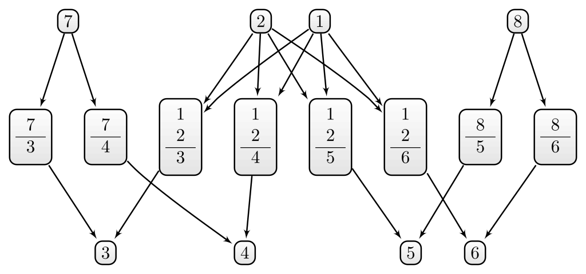
Example C.2 (Second example for D5) A similar case is depicted in Figure C.3. Here, you do not need all principles of the theory \(\mathcal{T}_1 = \{1,2,4\}\) to deduce sentence \(3\) or \(5\) on their own. However, the principles of \(\mathcal{T}_1\) still work together since you need sentence \(1\) in either case. In contrast, the principles of the theory \(\mathcal{T}_2 = \{1,6,7\}\) work alone to deduce \(3\) and \(5\). (Here, \(1\) is even an ad hoc principle.) Again, D5 requires that \(S(\mathcal{T}_2) < S(\mathcal{T}_1)\)
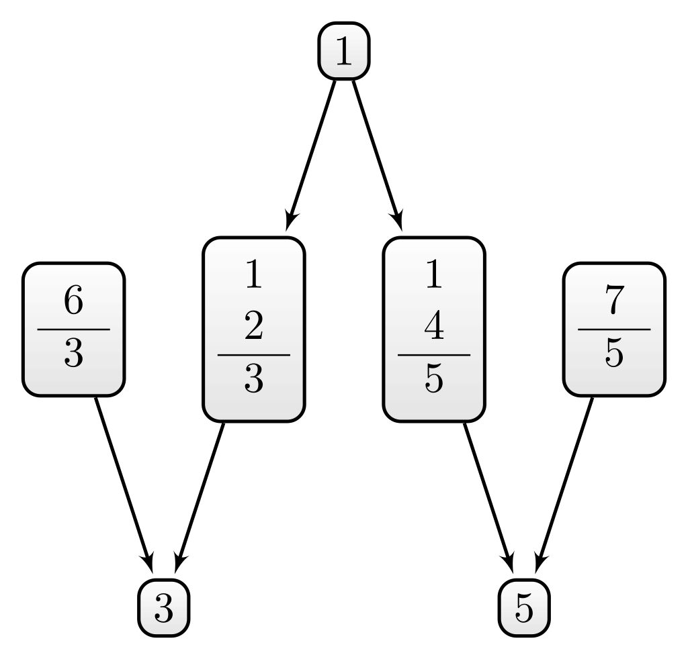
The measure \(S_{BBB}\) cannot satisfy D5 for the simple reason that the measure is blind to the differences in the given examples. This measure calculates systematicity based on the theory’s size and the size of its dialectical closure without considering any other inferential properties of the dialectical structure.
C.1.6 D6 – External Connectedness
So far, we have only considered the inferential potential of a theory based on what is implied by the principles alone (D1) and how the principles work together in producing their content (D5). It might, additionally, be relevant to consider what the theory implies with the help of other sentences.
Example C.3 (Example for D6) For instance, the theory \(\mathcal{T}_1=\{1\}\) does not imply anything on its own (besides its principle) and is thus on par with other singleton theories according to the original measure of systematicity.However, in contrast to, let’s say, the theory \(\mathcal{T}_2=\{4\}\), \(\mathcal{T}_1\) does imply sentences if it is combined with other sentences, in particular \(2\) or \(3\). We might, therefore, expect that the systematicity of \(\mathcal{T}_1\) is higher than the systematicity of \(\mathcal{T}_2\).
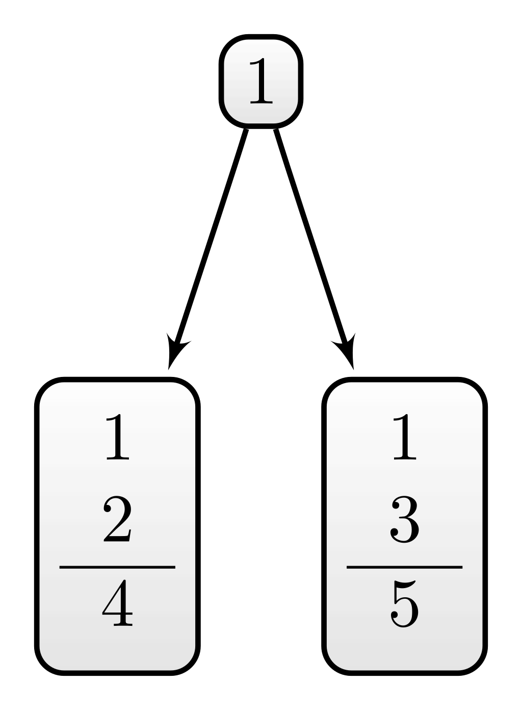
This motivates:
D6 (external connectedness): Everything else being equal, if the content of a theory \(\mathcal{T}_1\) is larger with some auxiliary assumptions as compared to another theory \(\mathcal{T}_2\), then \(\mathcal{T}_1\) has a larger systematicity than \(\mathcal{T}_2\).
Again, \(S_{BBB}\) cannot satisfy D6 since it is confined to calculate systematicity based on \(\vert\mathcal{T}\vert\) and \(\vert\overline{\mathcal{T}}\vert\).
C.2 Simple Systematicity Measures
The measure \(S_{BBB}\) uses only the size of a theory and the size of its dialectical closure to calculate systematicity. We will call systematicity measures that follow this recipe simple systematicity measures. In the following, we will suggest alternative systematicity measures and analyze their performance concerning D1-D6. We will begin with simple systematicity measures.
C.2.1 Minimal Mutation Systematicity
The measure \(S_{BBB}\) violates D1 (content) due to the numerator \(\vert \mathcal{T}\vert-1\) in Equation C.1, which becomes zero for singleton theories. Accordingly, singleton theories receive maximum systematicity independent of their content. One simple suggestion to fix this behaviour is to adapt the numerator such that it does not become zero for theories of size one. A minimal adaption would be to subtract smaller values than one:
\[ S_{mm}(\mathcal{T}\vert \gamma):=G\left(\frac{|\mathcal{T}|-\gamma}{|\overline{\mathcal{T}}|}\right) \]
with \(\gamma<1\).
Figure C.5 plots the systematicity measure for different values of the parameter \(\gamma\). By construction, the measure satisfies D1 (content). Similar to \(S_{BBB}\), it also satisfies D2 (simplicity) and D4.1 (non-ad-hocness). It is even possible to comply with D3.1 (minimal systematicity) if we set \(\gamma\) high enough. In our case (sentence pool of size 14), \(\gamma=0.1\) is able to push the systematicity values of \((m,m)\) theories (i.e., ineffective theories) such that they are lower bounds for effective theories.
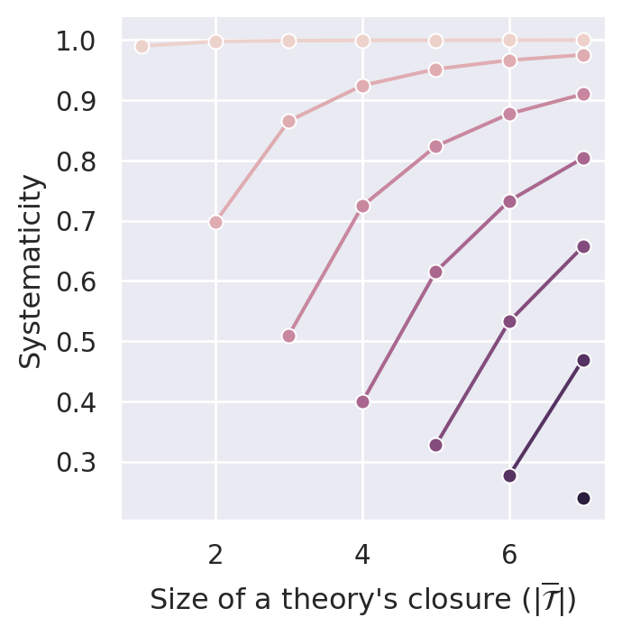
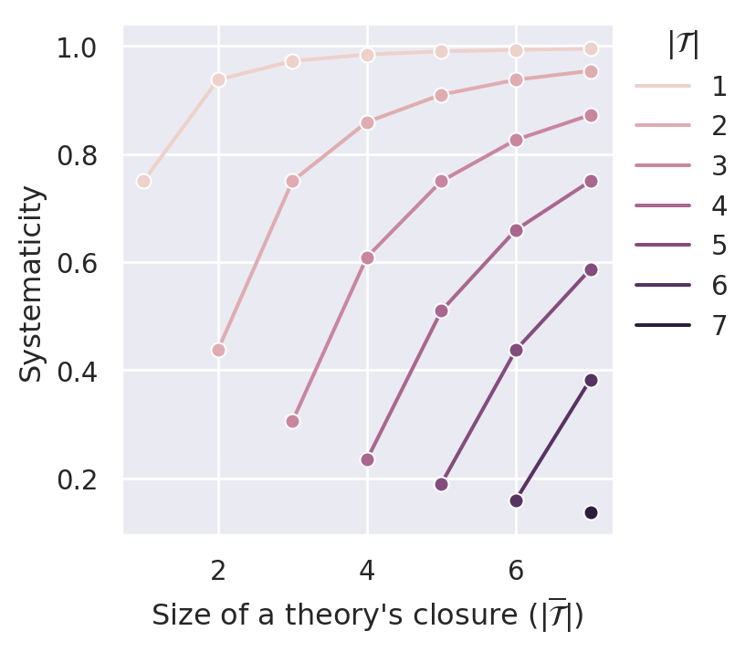
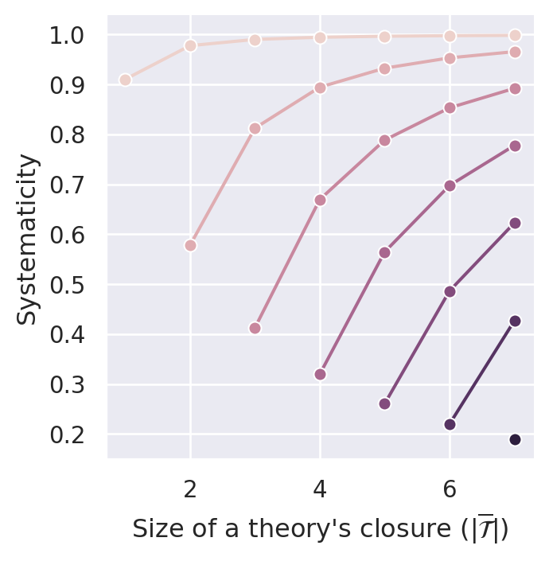
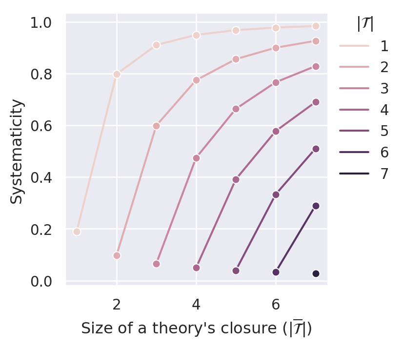
C.2.2 Effective Content Systematicity
The basic idea of the measure \(S_{BBB}\) to satisfy D1 (content) and D2 (simplicity) is to employ the “penalizing” term \(\frac{|\mathcal{T}|-1}{|\overline{\mathcal{T}}|}\), which gets bigger with an increase in theory size (\(|\mathcal{T}|\)) and a decrease in the size of the closure (\(|\overline{\mathcal{T}}|\)). There are, however, other ideas to implement a similar behaviour. A straightforward suggestion is to use the non-trivial content—that is, a theory’s dialectical implications besides its principles (\(\overline{\mathcal{T}}\setminus \mathcal{T}\))—to measure systematicity. In this way, an increase in the amount of principles leads to a decrease in systematicity and an increase in the content to an increase.
What remains is a proper normalization of the measure:
\[ S_{ec}(\mathcal{T})=\frac{\vert \overline{\mathcal{T}}\setminus \mathcal{T}\vert }{n-1}=\frac{\vert \overline{\mathcal{T}}\vert - \vert \mathcal{T}\vert}{n-1} \]
Maximally systematizing theories are singleton theories that are able to imply for every sentence \(s\) outside of their domain either \(s\) or its negation.5 For such theories, we have \(\vert \overline{\mathcal{T}}\vert - \vert \mathcal{T}\vert = n-1\), which motivates the denominator. Worst cases are ineffective theories for which \(\vert \overline{\mathcal{T}}\vert = \vert \mathcal{T}\vert\) holds, which yields \(S_{ec}=0\).
\(S_{ec}\) is linear. An alternative would be to use a quadratic term that is more akin to the quadratic form of \(S_{BBB}\):
\[ S_{ec^2}(\mathcal{T})=1-\left(1-\frac{\vert \overline{\mathcal{T}}\vert - \vert \mathcal{T}\vert}{n-1}\right)^2 \]
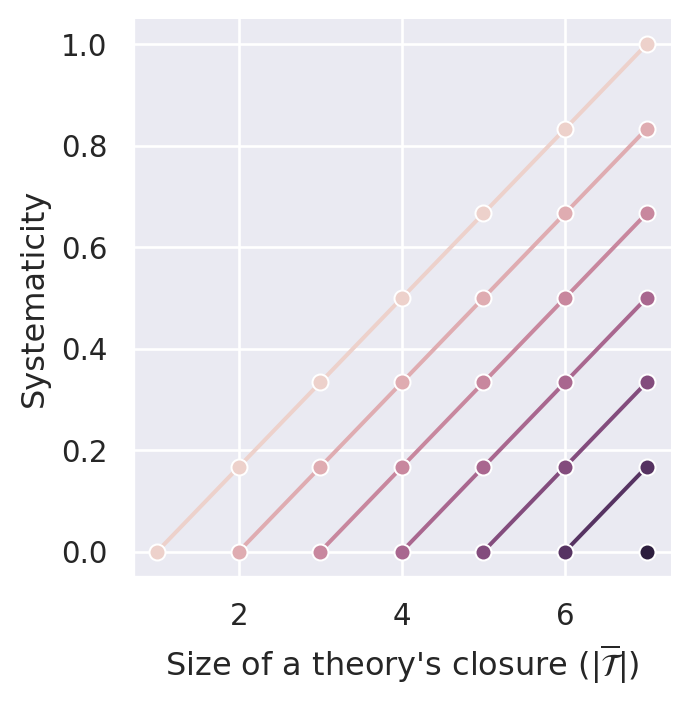
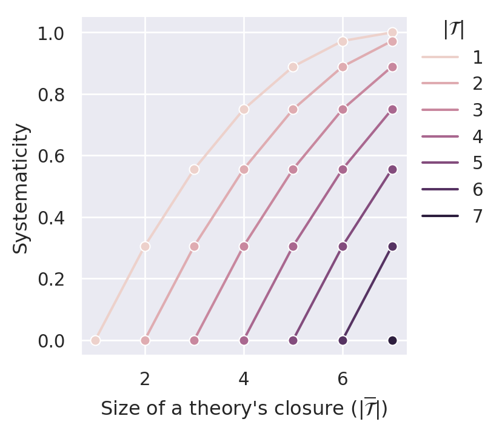
Both measureses satisfy D1, D2, D3.1. However, they fail to account properly for ad hoc principles (D4.1) and similar to all simple measures, they do not satisfy D5 and D6.
C.2.3 Content-Simplicity Weighted Systematicity
The measure \(S_{ec}\) can be motivated in an additional way, which will not only explain why it violates D4.1 (non-ad-hocness) but which will allow us to construct other measures which will satisfy D4.1.
The basic idea is to formulate separate penalizing terms for simplicity and content:
- Simplicity penalties: \(\vert\mathcal{T}\vert -1\)
- Content penalties: \(n - \vert\overline{\mathcal{T}}\vert\)
Note that theories that are optimal according to simplicity and content receive no penalties.
We can now aggregate them and introduce an additional parameter \(\alpha\) that can be used to balance the penalizing contributions:
\[ \alpha\cdot(\vert\mathcal{T}\vert -1) + (1-\alpha)\cdot(n - \vert\overline{\mathcal{T}}\vert) \tag{C.2}\]
Thus, if \(\alpha > \frac{1}{2}\), then a loss in simplicity is penalized more severely than a loss in content.
Using \(\vert\overline{\mathcal{T}}\vert \geq \vert\mathcal{T}\vert \geq 0\), one can show that
\[ \alpha\cdot(\vert\mathcal{T}\vert -1) + (1-\alpha)\cdot(n - \vert\overline{\mathcal{T}}\vert) \leq \vert\overline{\mathcal{T}}\vert\cdot (2\cdot\alpha - 1) + n\cdot (1-\alpha) - \alpha \]
Accordingly, we define
\[ c:= \vert\overline{\mathcal{T}}\vert\cdot (2\cdot\alpha - 1) + n\cdot (1-\alpha) - \alpha \]
and use it to normalize the penalizing term. We will define the new weighted measure by:
\[ S_{csw_\alpha}(\mathcal{T}\vert \alpha) = 1-\frac{\alpha\cdot(\vert\mathcal{T}\vert -1) + (1-\alpha)\cdot(n - \vert\overline{\mathcal{T}}\vert)}{c} \]
One can show that \(S_{csw_\alpha}(\mathcal{T}\vert 0.5)=S_{ec}\). In other words, if we balance the penalizing terms for content and size similarly, the new measure \(S_{csw_\alpha}\) reduces to \(S_{ec}\), which explains why the latter is not able to satisfy D4.1 (non-ad-hocness). Adding an ad hoc principle to a theory will increase its size by one and similarly increase its content by one. What is gained in content is lost in simplicity.
If we want that systematicity decreases with the addition of ad hoc principles (D4.1), we must penalize an increase in size more than a decrease in content (i.e., \(\alpha > \frac{1}{2}\).) This is illustrated in Figure C.7. For \(\alpha=0.1\) and \(\alpha=0.5\) D4.1 is violated. If, however, we set \(\alpha>0.5\) (e.g., \(0.7\) or \(0.9\)), the measure satisfies D4.1.
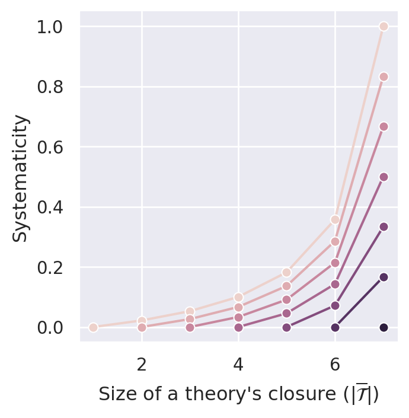
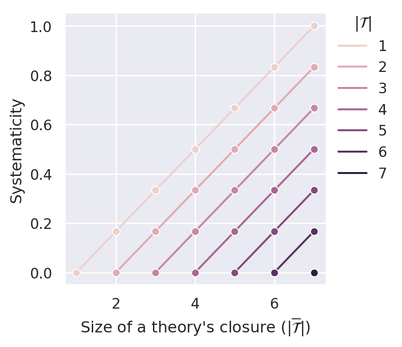
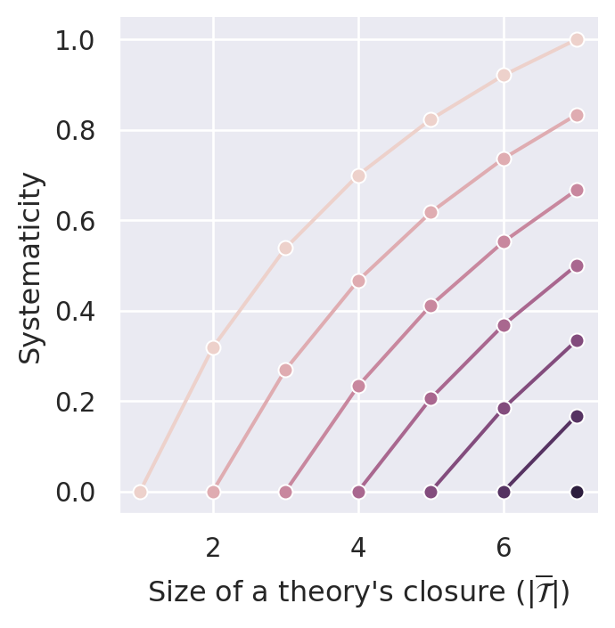
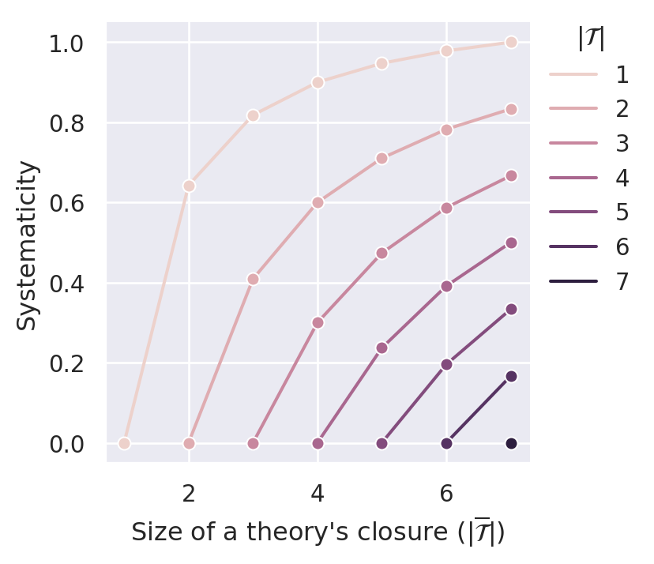
Similarly to \(S_{ec}\), the new measure \(S_{csw_\alpha}\) complies with D3.1 (minimal systematicity). They do so in a very specific way: The systematicity values for ineffective theories are not only lower bounds for effective theories, but they also receive the same and lowest systematicity value possible, namely \(0\).
Surely, for a fixed \(\vert\mathcal{T}\vert\), systematicity should be minimised for \(\vert\overline{\mathcal{T}}\vert = \vert\mathcal{T}\vert\) and vice versa. However, it is not clear that all cases of \(\vert\overline{\mathcal{T}}\vert = \vert\mathcal{T}\vert\) should have equal systematicity of \(0\). Especially if we conceive systematicity to be a weighted combination of simplicity and content, we might think that cases of larger \(\vert\overline{\mathcal{T}}\vert = \vert\mathcal{T}\vert\) are better or worse than cases of smaller ones. In particular, if simplicity has more weight than content (\(\alpha>0.5\)), then smaller ones should be (a little) more systematic than larger ones (because they are simpler).
This suggests an alternative normalization. For \(\alpha>0.5\), the worst case would be \(\vert\overline{\mathcal{T}}\vert = \vert\mathcal{T}\vert = n\) (minimal simplicity). Plugging this into the penalty function Equation C.2 gives us a normalizing denominator of \(\alpha\cdot(n -1)\). For \(\alpha<0.5\), the worst case would be \(\vert\overline{\mathcal{T}}\vert = \vert\mathcal{T}\vert = 1\) (minimal content). Plugging this into the penalty function gives us the normalizing denominator \((1-\alpha)\cdot(n -1)\). The denominator that covers both cases is \((\vert\alpha -0.5\vert+0.5)\cdot(n-1)\).
To better distinguish the resulting alternative measure from \(S_{sw_\alpha}\), we rename the parameter \(\alpha\) to \(\beta\). This gives:
\[ S_{sw_\beta}(\mathcal{T}) = 1-\frac{\beta\cdot(\vert\mathcal{T}\vert -1) + (1-\beta)\cdot(n - \vert\overline{\mathcal{T}}\vert)}{(\vert\beta -0.5\vert+0.5)\cdot(n-1)} \]
Similar to \(S_{sw_\alpha}\), \(S_{sw_\beta}\) satisfies D1, D2. The desiderata D3.1 and D4.1 are satisfied for certain valus of \(\alpha\) (in our case for \(\alpha == 0.525\)) as illustrated in Figure C.8.
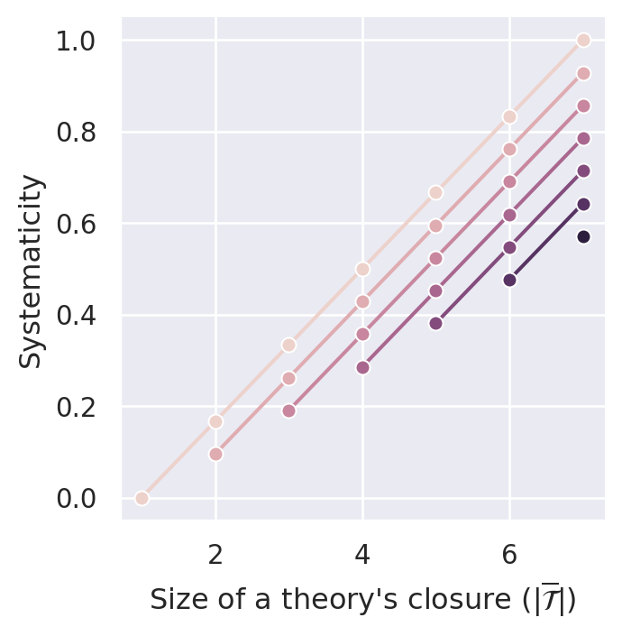
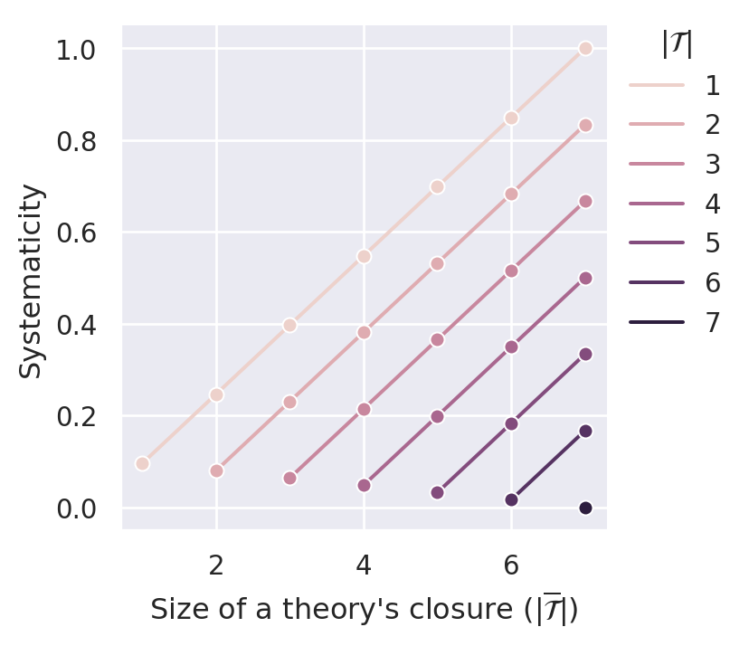

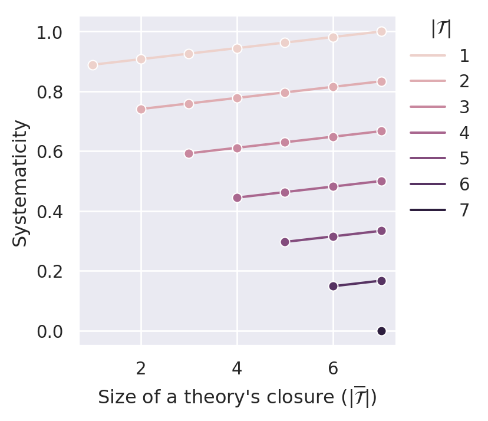
C.2.4 Relative Effective Content Systematicity
The formulation of another solution starts by framing the problem of \(S_{ec}\) in the following way: \(S_{ec}\) simply measures the number of implied sentences outside the theory’s principles (\(\vert \overline{\mathcal{T}}\vert - \vert \mathcal{T}\vert\)). Consequently, \(S_{ec}\) cannot distinguish between theories that are expanded by ad hoc principles, that is, principles that do not expand the theory’s content besides the added principles.
However, if a theory is expanded by ad hoc principles, its content measured relative to its size (\(\frac{\vert \overline{\mathcal{T}}\vert - \vert \mathcal{T}\vert}{\vert \mathcal{T}\vert}\) ) will decrease.
This suggests to measure \(\frac{\vert \overline{\mathcal{T}}\vert - \vert \mathcal{T}\vert}{\vert \mathcal{T}\vert}\) instead of simply measuring \(\vert \overline{\mathcal{T}}\vert - \vert \mathcal{T}\vert\), e.g., as follows:
\[ S(\mathcal{T})= \frac{\vert \overline{\mathcal{T}}\vert - \vert \mathcal{T}\vert}{\vert \mathcal{T}\vert (n-1)} \]
Alternatively, we can conceptuali7e \(\frac{\vert \overline{\mathcal{T}}\vert - \vert \mathcal{T}\vert}{\vert \mathcal{T}\vert}\) as a multiplicative correction factor for \(S_{ec}\) which can lead to the following:
\[ S(\mathcal{T})=S_{ec}\frac{\vert \overline{\mathcal{T}}\vert - \vert \mathcal{T}\vert}{\vert \mathcal{T}\vert (n-1)} \]
This quadratic form might, however, decrease \(S(\mathcal{T})\) unnecessarily, which motivates us to take the square root of the latter expression:
\[ S_{rec}(\mathcal{T}):= \sqrt{S_{ec}\frac{\vert \overline{\mathcal{T}}\vert - \vert \mathcal{T}\vert}{\vert \mathcal{T}\vert (n-1)}}= \frac{\vert \overline{\mathcal{T}}\vert - \vert \mathcal{T}\vert}{\sqrt{\vert \mathcal{T}\vert} (n-1)} \]
Figure C.9 illustrates that \(S_{rec}(\mathcal{T})\) satisfies D1, D2, D3.1 and D4.1.
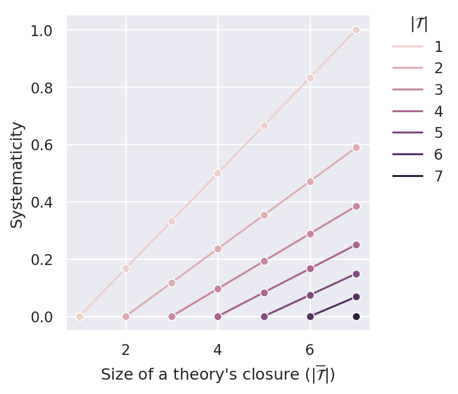
C.3 Sigma-Based Systematicity Measures
All simple systematicity measures are not able to account for D5 (internal connectedness) and D6 (internal connectedness) for the simple reason that they evaluate systematicity based on \(\vert \mathcal{T}\vert\) and \(\vert \overline{\mathcal{T}}\vert\) alone. The problem, in particular, is that the dialectical closure as defined by \(\overline{\mathcal{T}}=\{s\in \mathcal{S}\vert \mathcal{T}\models_{\tau} s\}\) will miss those dialectical implications that are relevant for D5 and D6. The dialectical closure \(\overline{\mathcal{T}}\) enumerates only atomic sentences as implications. While it is clear that arbitrary conjunctions of these atomic sentences are also implications, \(\overline{\mathcal{T}}\) is blind to other complex implications of \(\mathcal{T}\). It can, in particular, not distinguish between theories \(\mathcal{T}_1\) and \(\mathcal{T}_2\) for which \(\overline{\mathcal{T}_1} \neq \overline{\mathcal{T}_2}\) but which differ with respect to certain disjunctions implied by the theories (i.e., extensional if-then clauses or “conditional implications”).
If we want to account for D5 and D6, we have to use a more ambitious concept of content. In the following, we will draw on the theory of dialectical structures (Betz 2013) to explicate such a notion of content.
The inferential density of a dialectical structure \(\tau\) “can be understood as measure of the inferential constraints encoded in \(\tau\)” (Betz 2013, 44) and is defined as
\[ D(\tau) = \frac{n-lg(\sigma)}{n} \]
with \(\sigma\) being the number of complete and dialectically consistent positions on a dialectical structure \(\tau\) and \(2n\) the size of the sentence pool \(\mathcal{S}\).
A position is a set of sentences from \(\mathcal{S}\) (e.g., the commitments of an epistemic state in our RE model). A dialectical structure will render some of these positions dialectically inconsistent. For instance, an argument with one premise \(s_1\) and the conclusion \(s_2\) renders the position \(\{s_1,\neg s_2\}\) dialectically inconsistent.
A complete position is a position that includes for each \(s\in\mathcal{S}\) either \(s\) or \(\neg s\). Hence, complete positions do not include flat contradictions (\(s\) and \(\neg s\)), i.e. they are minimally consistent. If a dialectical structure is ineffective, and thus does not render any position dialectically inconsistent, then there are \(2^n\) complete and consistent positions. In this case, \(D(\tau)=0\). On the other hand, if \(\tau\) allows for exactly one complete and consistent position, and hence renders all other complete positions dialectically inconsistent, then we have \(D(\tau)=1\).
It is straightforward to generalize the concept of inferential density to a notion of content. The inferential density \(D(\tau)\) measures how many complete positions are dialectically inconsistent given the dialectical structure alone. We can now ask which complete positions are rendered additionally inconsistent if we further assume the truth of sentences from a theory \(\mathcal{T}\). In other words, if \(\sigma_{\mathcal{T}}\) is the number of complete consistent positions that extend a theory \(\mathcal{T}\), the term \(\sigma-\sigma_\mathcal{T}\) can be taken to measure the (\(\sigma\)-based) content size \(\vert C_\sigma(\mathcal{T})\vert\) of a theory. Proper normalization leads to the following:
\[ \vert C_\sigma(\mathcal{T})\vert = \frac{lg(\sigma-\sigma_{\mathcal{T}}+1)}{n} \tag{C.3}\]
If \(\sigma=2^n\) (minimal inferential density) and \(\sigma_\mathcal{T}=1\) (maximal content), \(\vert C_\sigma(\mathcal{T})\vert=1\). If, on the other hand, the theory cannot render anything inconsistent that is not already inconsistent by \(\tau\) alone (i.e., \(\sigma=\sigma_\mathcal{T}\)), \(\vert C_\sigma(\mathcal{T})\vert=0\).
The more implications \(\mathcal{T}\) has, the more complete positions are (additionally) rendered dialectically inconsistent. In this way, the expression Equation C.3 is a natural generalization of \(\vert\overline{\mathcal{T}}\vert\).6
C.3.1 Generalizing Relative Effective Content Systematicity
There are surely different possibilities to introduce systematicity measures based on the (\(\sigma\)-based) content size \(\vert C_\sigma(\mathcal{T})\vert\). Here, we discuss but one measure, which is based on the considerations we used to devise the measure \(S_{rec}\) in Section C.2.4. The basic idea of this measure was to take the effective content size \(\vert\overline{\mathcal{T}}\setminus\mathcal{T}\vert\) in relation to the size of the theory.
Hence, the first step is to find a generalization of the expression \(\vert\overline{\mathcal{T}}\setminus\mathcal{T}\vert\). Similar to \(S_{rec}\), we are interested in what a theory inferentially accomplishes besides implying its principles. To that end, we might consider those positions that are complete and dialectically consistent outside the domain of the theory. That is, we consider a restriction of the sentence pool \(\mathcal{S}\) to those sentences that are neither principles nor negations of a theory’s principles.
More formally, let \(\mathcal{S}_{\mathcal{T}}\) be the domain of \(\mathcal{T}\), and let \(\mathcal{S}\setminus\mathcal{T}=\mathcal{S}\setminus \mathcal{S}_{\mathcal{T}}\) be the domain outside the principles of \(\mathcal{T}\), \(2m\) the size of the restricted sentence pool and \(\sigma_{\mathcal{T}}^{\mathcal{S}\setminus\mathcal{T}}\) the number of positions that are dialectically consistent given \(\mathcal{T}\) and complete on the restricted domain \(\mathcal{S}\setminus\mathcal{T}\). Then, we can define the effective content size on \(\mathcal{S}\setminus\mathcal{T}\) as
\[ \vert C_\sigma(\mathcal{T}, \mathcal{S}\setminus\mathcal{T})\vert = \frac{lg(\sigma^{\mathcal{S}\setminus\mathcal{T}}-\sigma^{\mathcal{S}\setminus\mathcal{T}}_{\mathcal{T}}+1)}{m}. \tag{C.4}\]
Similar to \(S_{rec}\), systematicity should measure the effective content size relative to the size of the theory—that is, something like: \[ S\propto\frac{lg(\sigma^{\mathcal{S}\setminus\mathcal{T}}-\sigma^{\mathcal{S}\setminus\mathcal{T}}_{\mathcal{T}}+1)}{\vert\mathcal{T}\vert \cdot m} \]
What remains is a proper normalization.
Maximal effective content is reached by singleton theories that render all but one position inconsistent. Under this assumption we have \(\sigma^{\mathcal{S}\setminus\mathcal{T}}_{\mathcal{T}}=1\) and \(\vert \mathcal{T}\vert=1\). The value of \(\sigma^{\mathcal{S}\setminus\mathcal{T}}\) will depend on the singleton theory in question. One suggestion is, therefore, to take \(max(\{\sigma^{\mathcal{S}\setminus \{s\}})\vert s\in \mathcal{S} \}\) to normalize the measure.
For simplicity, we will use another estimation. \(\sigma^{\mathcal{S}\setminus\mathcal{T}}\) will be maximal if the dialectical structure is silent on the domain \(\mathcal{S}\setminus\mathcal{T}\); that is, if it doesn’t render anything dialectically inconsistent on \(\mathcal{S}\setminus\mathcal{T}\). In this case, \(\sigma^{\mathcal{S}\setminus\mathcal{T}}\) will be \(2^{n-1}\) for singleton theories. This motivates the following normalization:7
\[ S_{grec}(\mathcal{T})=\frac{lg(\sigma^{\mathcal{S}\setminus\mathcal{T}}-\sigma^{\mathcal{S}\setminus\mathcal{T}}_{\mathcal{T}}+1)}{\vert\mathcal{T}\vert \cdot (n-1)} \tag{C.5}\]
How does this measure perform with respect to the different desiderata?
For the simple measures, we equated content with \(\overline{\mathcal{T}}\). Since we adopted a more ambitious concept of content for the generalized measure, we have to assess its performance with respect to this explication of content.
The desiderata D1 (content) and D2 (simplicity) are trivially satisfied. The numerator of Equation C.5 is proportional to the size of the generalized content; the denominator is proportional to the theory size. Accordingly, if we keep the size of the theory constant, systematicity increases with increasing content (D1). Similarly, if we keep the theory’s content constant, systematicity increases with a decrease in theory size (D2). Figure Figure C.10 illustrates this behaviour.8
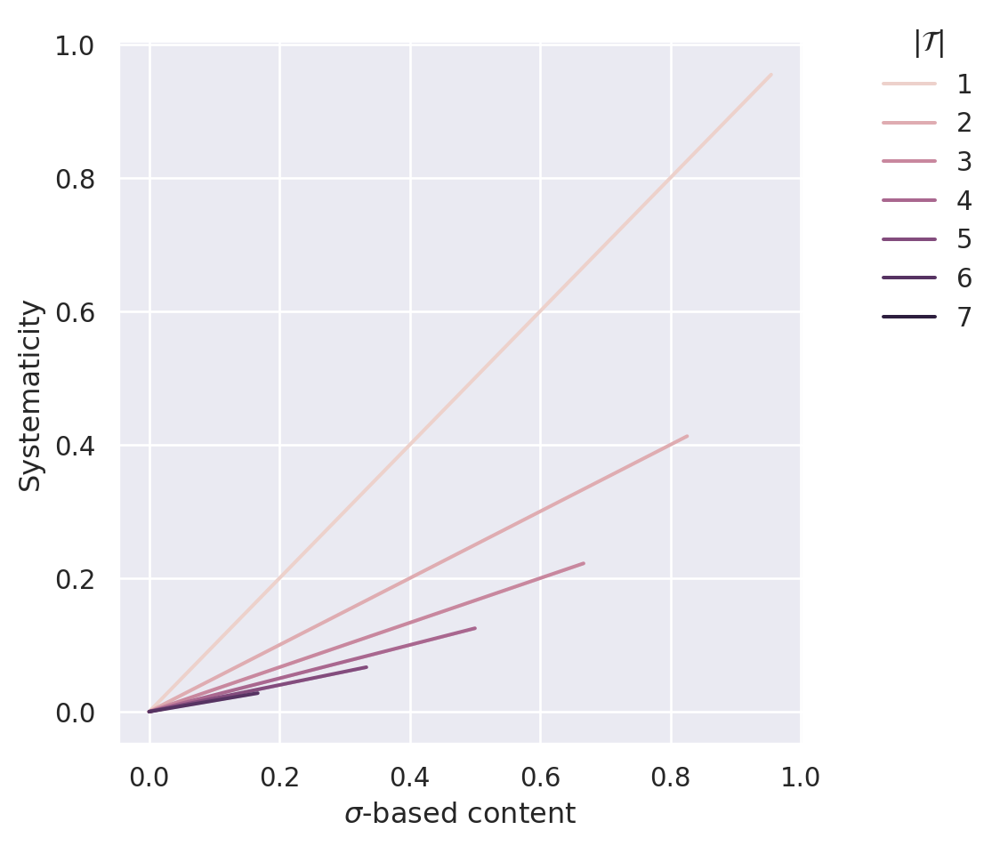
Ineffective theories do not imply anything besides their principles that is not already tautologically true (with respect to \(\tau\)). Accordingly, they do not render any positions inconsistent on \(\sigma^{\mathcal{S}\setminus\mathcal{T}}\) that are not already dialectically inconsistent according to \(\tau\) alone. Hence, we have \(\sigma^{\mathcal{S}\setminus\mathcal{T}}=\sigma^{\mathcal{S}\setminus\mathcal{T}}_{\mathcal{T}}\), which implies that \(S_{grec}(\mathcal{T})=0\) for ineffective theories. Effective theories, on the other hand, do imply something additional on \(\sigma^{\mathcal{S}\setminus\mathcal{T}}\). Hence, we have \(\sigma^{\mathcal{S}\setminus\mathcal{T}}>\sigma^{\mathcal{S}\setminus\mathcal{T}}_{\mathcal{T}}\) and accordingly \(S_{grec}(\mathcal{T})>0\) for effective theories. Taken together, this implies that systematicity values of ineffective theories are lower bounds for those of effective theories (D3.1).
It is difficult to assess the desideratum D4.1 visually (as we did with the simple measures) since we cannot identify ad hoc extensions of theories in Figure C.10. However, similar to D3.1, we can provide a proof that \(S_{grec}\) conforms to D4.1.
Lemma C.1 The generalized relative effective content systematicity satisfies D4.1.
Proof. We have to show that \(S_{grec}(\mathcal{T}^*) < S_{grec}(\mathcal{T})\) if \(\mathcal{T}^*\) is an extension of \(\mathcal{T}\) with mere ad hoc principles. So let us assume that \(\mathcal{T}^*\) is the result of adding an ad hoc principle \(p\in\mathcal{S}\) to a theory \(\mathcal{T}\).
We have to show that
\[ \frac{lg(\sigma^{\mathcal{S}\setminus\mathcal{T}^*}-\sigma^{\mathcal{S}\setminus\mathcal{T}^*}_{\mathcal{T}^*}+1)}{\vert\mathcal{T}^{*}\vert \cdot (n-1)} < \frac{lg(\sigma^{\mathcal{S}\setminus\mathcal{T}}-\sigma^{\mathcal{S}\setminus\mathcal{T}}_{\mathcal{T}}+1)}{\vert\mathcal{T}\vert \cdot (n-1)} \]
The corresponding comparison for simple systematicity measures is more or less trivial. In these cases, we could simply use that \(\vert\overline{\mathcal{T}}\setminus\mathcal{T}\vert = \vert\overline{\mathcal{T}}^*\setminus\mathcal{T}^*\vert\). Adding one ad hoc principle to a theory increases its closure and size by one. If we compare the change of size and \(\sigma\)-based content, the comparison is not so straightforward any more.
Basically, we have to compare \(\sigma^{\mathcal{S}\setminus\mathcal{T}^*}-\sigma^{\mathcal{S}\setminus\mathcal{T}^*}_{\mathcal{T}^*}\) with \(\sigma^{\mathcal{S}\setminus\mathcal{T}}-\sigma^{\mathcal{S}\setminus\mathcal{T}}_{\mathcal{T}}\). Clearly, \(\sigma^{\mathcal{S}\setminus\mathcal{T}^*}\leq\sigma^{\mathcal{S}\setminus\mathcal{T}}\) (since \(\mathcal{S}\setminus\mathcal{T}^*\subset \mathcal{S}\setminus\mathcal{T}\)). Additionally, we can use the definition of ad hoc principles: Adding ad hoc principles to a theory \(\mathcal{T}\) does not do anything in addition to \(\mathcal{T}\) on \(\mathcal{S}\setminus\mathcal{T}^*\). Hence, \(\sigma^{\mathcal{S}\setminus\mathcal{T}^*}_{\mathcal{T}^*}=\sigma^{\mathcal{S}\setminus\mathcal{T}^*}_{\mathcal{T}}\). Considering this equation, we have to compare \(\sigma^{\mathcal{S}\setminus\mathcal{T}^*}_{\mathcal{T}}\) with \(\sigma^{\mathcal{S}\setminus\mathcal{T}}_{\mathcal{T}}\) and, again, we have \(\sigma^{\mathcal{S}\setminus\mathcal{T}^*}_{\mathcal{T}}\leq \sigma^{\mathcal{S}\setminus\mathcal{T}}_{\mathcal{T}}\). But this simple estimation does not help to get us any further with comparing \(\sigma^{\mathcal{S}\setminus\mathcal{T}^*}-\sigma^{\mathcal{S}\setminus\mathcal{T}^*}_{\mathcal{T}^*}\) and \(\sigma^{\mathcal{S}\setminus\mathcal{T}}-\sigma^{\mathcal{S}\setminus\mathcal{T}}_{\mathcal{T}}\).
What we need is a more precise estimation of the forms \(\sigma^{\mathcal{S}\setminus\mathcal{T}^*}+a = \sigma^{\mathcal{S}\setminus\mathcal{T}}\) and \(\sigma^{\mathcal{S}\setminus\mathcal{T}^*}_{\mathcal{T}}+b= \sigma^{\mathcal{S}\setminus\mathcal{T}}_{\mathcal{T}}\). In other words, we need to know the extent to which \(\sigma^{\mathcal{S}\setminus\mathcal{T}}_{(\mathcal{T})}\) increases when further restricting the sentence pool.
Let’s start with \(\sigma^{\mathcal{S}\setminus\mathcal{T}^*}\) and \(\sigma^{\mathcal{S}\setminus\mathcal{T}}\). We will search for an additive expression for both terms. Let \(\Gamma\) be the set of all complete and consistent positions on \(\tau\) (hence, \(\sigma=\vert \Gamma\vert\)). In analogy to \(\sigma^{\mathcal{S}'}\), we will define \(\Gamma^{\mathcal{S}'}\) as the set of consistent positions that are complete on the subdomain \(\mathcal{S}'\subset \mathcal{S}\). More formally, we can define:
\[ \Gamma^{\mathcal{S}'}=\{\mathcal{A}\cap \mathcal{S}' \vert \mathcal{A}\in \Gamma\} \]
We will now partition \(\Gamma^{\mathcal{S}\setminus\mathcal{T}^*}\). Since, \(\mathcal{S}\setminus\mathcal{T}^*\subset \mathcal{S}\setminus\mathcal{T}\), we have
\[ \Gamma^{\mathcal{S}\setminus\mathcal{T}^*}=\{\mathcal{A}\cap \mathcal{S}\setminus\mathcal{T}^* \vert \mathcal{A}\in \Gamma^{\mathcal{S}\setminus\mathcal{T}}\} \tag{C.6}\]
In other words, elements in \(\Gamma^{\mathcal{S}\setminus\mathcal{T}^*}\) result from reducing elements in \(\Gamma^{\mathcal{S}\setminus\mathcal{T}}\) to the domain outside \(\mathcal{T}^*\). Since the domains \(\mathcal{S}\setminus\mathcal{T}\) and \(\mathcal{S}\setminus\mathcal{T}^*\) only differ with respect to the principle \(p\) and its negation (i.e., \(\mathcal{S}\setminus\mathcal{T}-\mathcal{S}\setminus\mathcal{T}^*=\{p,\neg p\}\)), there are three (exclusive) possibilities of how elements from \(\Gamma^{\mathcal{S}\setminus\mathcal{T}}\) are mapped to elements from \(\Gamma^{\mathcal{S}\setminus\mathcal{T}^*}\): For all \(A\in\Gamma^{\mathcal{S}\setminus\mathcal{T}^*}\) either
- \(A\cup \{p\}\in \Gamma^{\mathcal{S}\setminus\mathcal{T}}\) and \(A\cup \{\neg p\}\notin \Gamma^{\mathcal{S}\setminus\mathcal{T}}\), or
- \(A\cup \{p\}\notin \Gamma^{\mathcal{S}\setminus\mathcal{T}}\) and \(A\cup \{\neg p\}\in \Gamma^{\mathcal{S}\setminus\mathcal{T}}\), or
- \(A\cup \{p\}\in \Gamma^{\mathcal{S}\setminus\mathcal{T}}\) and \(A\cup \{\neg p\}\in \Gamma^{\mathcal{S}\setminus\mathcal{T}}\).
The corresponding sets are denoted by \(\Gamma^{\mathcal{S}\setminus\mathcal{T}^*}_1\), \(\Gamma^{\mathcal{S}\setminus\mathcal{T}^*}_2\) and \(\Gamma^{\mathcal{S}\setminus\mathcal{T}^*}_3\) and represent a partitioning of \(\Gamma^{\mathcal{S}\setminus\mathcal{T}^*}\):
\[ \Gamma^{\mathcal{S}\setminus\mathcal{T}^*}= \Gamma^{\mathcal{S}\setminus\mathcal{T}^*}_1 \cup \Gamma^{\mathcal{S}\setminus\mathcal{T}^*}_2 \cup \Gamma^{\mathcal{S}\setminus\mathcal{T}^*}_3 \]
Similar to the definition of \(\sigma_{\mathcal{T}}\), let \(\Gamma_{\mathcal{T}}\) the set of complete positions that extend \(\mathcal{T}\). Using this definition, we can partition \(\Gamma^{\mathcal{S}\setminus\mathcal{T}}\) into
\[ \Gamma^{\mathcal{S}\setminus\mathcal{T}}= \Gamma^{\mathcal{S}\setminus\mathcal{T}}_{\{p\}} \cup \Gamma^{\mathcal{S}\setminus\mathcal{T}}_{\{\neg p\}} \]
We can now use the above defined sets to rewrite \(\Gamma^{\mathcal{S}\setminus\mathcal{T}}_{\{p\}}\) and \(\Gamma^{\mathcal{S}\setminus\mathcal{T}}_{\{\neg p\}}\) in the following way:
\[ \Gamma^{\mathcal{S}\setminus\mathcal{T}}_{\{p\}}=\left( \Gamma^{\mathcal{S}\setminus\mathcal{T}^*}_1 \cup \{p\} \right) \cup \left( \Gamma^{\mathcal{S}\setminus\mathcal{T}^*}_3 \cup \{p\} \right) \]
\[ \Gamma^{\mathcal{S}\setminus\mathcal{T}}_{\{\neg p\}}=\left( \Gamma^{\mathcal{S}\setminus\mathcal{T}^*}_2 \cup \{\neg p\} \right) \cup \left( \Gamma^{\mathcal{S}\setminus\mathcal{T}^*}_3 \cup \{\neg p\} \right) \]
This leads to
\[ \sigma^{\mathcal{S}\setminus\mathcal{T}^*}=\sigma^{\mathcal{S}\setminus\mathcal{T}^*}_1 + \sigma^{\mathcal{S}\setminus\mathcal{T}^*}_2 + \sigma^{\mathcal{S}\setminus\mathcal{T}^*}_3 \]
and
\[ \sigma^{\mathcal{S}\setminus\mathcal{T}}=\sigma^{\mathcal{S}\setminus\mathcal{T}^*}_1 + \sigma^{\mathcal{S}\setminus\mathcal{T}^*}_2 + 2\sigma^{\mathcal{S}\setminus\mathcal{T}^*}_3 \]
and hence
\[ \sigma^{\mathcal{S}\setminus\mathcal{T}} = \sigma^{\mathcal{S}\setminus\mathcal{T}^*} + \sigma^{\mathcal{S}\setminus\mathcal{T}^*}_3 \tag{C.7}\]
An analogical partitioning of \(\Gamma^{S\setminus\mathcal{T}^*}_{\mathcal{T}}\) and \(\Gamma^{S\setminus\mathcal{T}}_{\mathcal{T}}\) yields
\[ \sigma^{\mathcal{S}\setminus\mathcal{T}}_{\mathcal{T}} = \sigma^{\mathcal{S}\setminus\mathcal{T}^*}_{\mathcal{T}} + (\sigma_{\mathcal{T}})^{\mathcal{S}\setminus\mathcal{T}^*}_{3} \tag{C.8}\]
We will now use Equation C.7 and Equation C.8 to show that \(S_{grec}(\mathcal{T}^*) < S_{grec}(\mathcal{T})\).
Clearly, \((\sigma_{\mathcal{T}})^{\mathcal{S}\setminus\mathcal{T}^*}_{3}\leq \sigma^{\mathcal{S}\setminus\mathcal{T}^*}_3\). Equation C.7 and Equation C.8 can now be used to deduce
\[ \sigma^{\mathcal{S}\setminus\mathcal{T}}_{\mathcal{T}} - \sigma^{\mathcal{S}\setminus\mathcal{T}^*}_{\mathcal{T}} \leq \sigma^{\mathcal{S}\setminus\mathcal{T}} - \sigma^{\mathcal{S}\setminus\mathcal{T}^*} \]
Since \(\mathcal{T}^*\) is an ad hoc extension of \(\mathcal{T}\), we have \(\sigma^{S\setminus\mathcal{T}^*}_{\mathcal{T}^*}=\sigma^{S\setminus\mathcal{T}^*}_{\mathcal{T}}\), which leads to
\[ \sigma^{\mathcal{S}\setminus\mathcal{T}}_{\mathcal{T}} - \sigma^{\mathcal{S}\setminus\mathcal{T}^*}_{\mathcal{T}^*} \leq \sigma^{\mathcal{S}\setminus\mathcal{T}} - \sigma^{\mathcal{S}\setminus\mathcal{T}^*} \]
which can be rewritten as
\[ \frac{lg(\sigma^{\mathcal{S}\setminus\mathcal{T}^*} - \sigma^{\mathcal{S}\setminus\mathcal{T}^*}_{\mathcal{T}^*}+1)}{(n-1)} \leq \frac{lg(\sigma^{\mathcal{S}\setminus\mathcal{T}} - \sigma^{\mathcal{S}\setminus\mathcal{T}}_{\mathcal{T}}+1)}{(n-1)} \tag{C.9}\]
Since \(\frac{\vert\mathcal{T}^*\vert}{\vert\mathcal{T}\vert}>1\) we have also
\[ \frac{lg(\sigma^{\mathcal{S}\setminus\mathcal{T}} - \sigma^{\mathcal{S}\setminus\mathcal{T}}_{\mathcal{T}}+1)}{(n-1)}< \frac{\vert\mathcal{T}^*\vert}{\vert\mathcal{T}\vert}\frac{lg(\sigma^{\mathcal{S}\setminus\mathcal{T}} - \sigma^{\mathcal{S}\setminus\mathcal{T}}_{\mathcal{T}}+1)}{(n-1)} \tag{C.10}\]
Using both estimations Equation C.9 and Equation C.10 we arrive at:
\[ \frac{lg(\sigma^{\mathcal{S}\setminus\mathcal{T}^*} - \sigma^{\mathcal{S}\setminus\mathcal{T}^*}_{\mathcal{T}^*}+1)}{\vert\mathcal{T}^*\vert(n-1)} < \frac{lg(\sigma^{\mathcal{S}\setminus\mathcal{T}} - \sigma^{\mathcal{S}\setminus\mathcal{T}}_{\mathcal{T}}+1)}{\vert\mathcal{T}\vert(n-1)} \]
Hence, \(S_{grec}(\mathcal{T}^*) < S_{grec}(\mathcal{T})\) if \(\mathcal{T}^*\) is an ad hoc extension of \(\mathcal{T}\). This concludes the proof of Lemma C.1.
How does \(S_{grec}\) performs with respect to D5 (internal connectedness) and D6 (external conenectedness)? Since we did not provide any explications of these desiderata, we only calculated \(S_{grec}\) for the given illustrations.
In example Example C.1, we considered two theories \(\mathcal{T}_1 = \{1,2\}\) and \(\mathcal{T}_2 = \{7,8\}\) and expect according to D5 that \(S(\mathcal{T}_2) < S(\mathcal{T}_1)\). However, the calculated values (\(S(\mathcal{T}_1)=0.32\) and \(S(\mathcal{T}_2)=0.40\)) yield the exact opposite: \(S(\mathcal{T}_2) > S(\mathcal{T}_1)\). Surprisingly, these results can be explained by the same reasoning we used to motivate D5 (compare Figure C.2). Since the sentences of \(S(\mathcal{T}_1)\) (\(1\) and \(2\)) only imply other sentences in their combination and the sentences of \(S(\mathcal{T}_2)\) (\(7\) and \(8\)) imply other sentences on their own, there are, for instance, more complete consistent positions given \(1\) than complete consistent positions given \(7\). In consequence, \(\sigma^{\mathcal{S}\setminus\mathcal{T}_1}<\sigma^{\mathcal{S}\setminus\mathcal{T}_2}\) (\(25\) vs. \(49\)). Additionally, \(\sigma^{\mathcal{S}\setminus\mathcal{T}_1}_{\mathcal{T}_1}=\sigma^{\mathcal{S}\setminus\mathcal{T}_2}_{\mathcal{T}_2}\) (\(4\)) and accordingly \(S(\mathcal{T}_2) > S(\mathcal{T}_1)\).
The same happens in Example C.2 (Figure C.3). There we expected \(S(\mathcal{T}_2) < S(\mathcal{T}_1)\) for the given theories. However, the calculation of \(S_{grec}\) yields: \(S(\mathcal{T}_2) > S(\mathcal{T}_1)\) (\(0.20\) vs. \(0.14\))—again due to \(\sigma^{\mathcal{S}\setminus\mathcal{T}_1}<\sigma^{\mathcal{S}\setminus\mathcal{T}_2}\) (\(9\) vs. \(16\)).
In consequence, principles working together is a disadvantage in terms of systematicity measured this way. The examples were intentionally constructed to yield \(\sigma^{\mathcal{S}\setminus\mathcal{T}_1}_{\mathcal{T}_1}=\sigma^{\mathcal{S}\setminus\mathcal{T}_2}_{\mathcal{T}_2}\) since we wanted to compare theories that differ to each other only in whether their principles work together. However, the only remaining relevant quantity in (\(\sigma^{\mathcal{S}\setminus\mathcal{T}}\)) will induce systematicity values in conflict with D5.
Example C.3 (Figure C.4) was used to motivate D6 (external connectedness). According to the formulated intuitions, everything else being equal, a theory’s systematicity should exceed another’s if the former implies more in combination with other sentences than the latter. The simple measures cannot satisfy D6 since they are insensitive to the non-trivial content (i.e., the content outside \(\overline{\mathcal{T}}\)). On the other hand, the effective content size \(\vert C_\sigma(\mathcal{T, S\setminus\mathcal{T}})\vert\) was conceptualized to account for these implications. Accordingly, it is not surprsing that \(S_{grec}\) satisfies D6.9 In the example, we expected that \(S(\mathcal{T}_2) < S(\mathcal{T}_1)\), which is confirmed by the corresponding calculations (\(0\) vs. \(0.78\)).
C.4 Conclusion
We motivated the desiderata D1-D6 by arguing that the systematicity measure \(S_{BBB}\) used in Beisbart, Betz, and Brun (2021) has some shortcomings and by alluding to some general intuitions concerning the concept of systematicity (Section C.1). We moved on to motivate some alternative measures and discussed their advantages and disadvantages in terms of D1-D6 (see Table C.1 for an overview).
Simple systematicity measures calculate their values based on the two quantities \(\vert \mathcal{T} \vert\) and \(\vert \overline{\mathcal{T}} \vert\). Accordingly, all simple measures cannot account for D5 and D6, which demands the consideration of additional properties of theories.
\(S_{BBB}\) does not (fully) satisfy D1 and does not satisfy D3.1. The most simple adaption of \(S_{BBB}\) (\(S_{mm}\)) satisfies D1-D4.1. The measures \(S_{ec}\) and \(S_{ec^2}\) are also able to fix the shortcomings of \(S_{BBB}\) but do not satisfy D4.1. We suggested three adaptions of \(S_{ec}\) that satisfy D1-D4.1, two of which incorporate an additional parameter to model the balancing between content and simplicity.
Sigma-based measures draw on a more sophisticated notion of content (Section C.3), which can be used to devise additional systematicity measures. We suggested one systematicity measure that is able to account for D1-D4.1 and D6 but which does not satisfy D5 (Section C.3.1).
| Systematicity measure | D1 | D2 | D3.1 | D4.1 | D5 | D6 |
|---|---|---|---|---|---|---|
| Standard measure (\(S_{BBB}\)) |  |
 |
|
|
|
|
| Minimal mutation systematicity (\(S_{mm}\)) | |
|
|
|
|
|
| Effective content systematicity (\(S_{ec}\)) | |
|
|
|
|
|
| Quadratic effective content systematicity (\(S_{ec^2}\)) | |
|
|
|
|
|
| Weighted systematicity (\(S_{csw_\alpha}\)) | |
|
|
|
|
|
| Weighted systematicity (\(S_{csw_\beta}\)) | |
|
|
|
|
|
| Relative effective content systematicity (\(S_{rec}\)) | |
|
|
|
|
|
| Generalized effective content systematicity (\(S_{grec}\)) | |
|
|
|
|
|
The described results are preliminary in that they do not prescribe to replace the measure \(S_{BBB}\).
First of all, we did not provide any simulation results of model variants using these alternative measures. Hence, we do not know how these model variants perform with respect to the described evaluation criteria (Section 2.3).
Second, we formulated but a few intuitions in favour of these desiderata without systematically arguing for them. Hence, it is undecided which of them are important (and to what extent).
Finally, even if these desiderata are important, there are other possibilities to account for them. Instead of threading them into one complex systematicity measure, they might be separated into different measures that are used to extend the given achievement function. For the measures \(S_{csw_\alpha}\) and \(S_{csw_\beta}\) we already suggested that content (D1) and simplicity (D2) might be weighted against each other. The considerations concerning how \(S_{grec}\) performs with respect to D5 and D6 also suggest that D5 and D6 might be in conflict with each other. Accordingly, making the corresponding balancing explicit (by parametrization) might be appropriate.
The considerations and suggestions we present in this appendix are based on different project-internal drafts and were discussed and further developed on several occasions within our project group of the project ‘How far does Reflective Equilibrium Take us? Investigating the Power of a Philosophical Method’. The considerations presented here are, in particular, not our original ideas.↩︎
The closure \(\overline{\mathcal{T}}\) is defined by \(\{s\in \mathcal{S}\vert \mathcal{T}\models_{\tau} s\}\), where \(\models_{\tau}\) denotes the relation of dialectical implication. In other words, this closure only contains “atomic” sentences from the sentence pool; it does not include any other logical consequences (such as conjunctions, for example).↩︎
In the RE Model, theories are dialectically consistent and therefore minimally consistent (see Chapter 2). Hence, a theory can have at most \(n\) principles if \(2n\) is the size of the sentence pool.↩︎
There, of course, other possibilities to adapt the model to achieve this goal.↩︎
If \(\mathcal{S}\) is the sentence pool, the domain of a theory \(\mathcal{T}\) is defined by \(\{s\in \mathcal{S}\vert s\in\mathcal{T}\text{ or }\neg s\in\mathcal{T}\}\).↩︎
In fact, Equation C.3 is more akin to \(\vert\overline{\mathcal{T}}\vert\) minus the amount of \(\tau\) truths (i.e., sentences that are tautologically true with respect to the dialectical structure \(\tau\)).↩︎
Admittedly, \(S_{grec}\) will under this construction never reach the value one, because \(\sigma^{\mathcal{S}\setminus\mathcal{T}}=2^{n-1}\) means that the theory won’t imply anything on \(\mathcal{S}\setminus\mathcal{T}\). However, \(S_{grec}\) will still have maximal systematicity values for singleton theories that have maximal content on \(\mathcal{S}\setminus\mathcal{T}\).↩︎
The figure is plotted based on a data set of 100 randomly generated dialectical structures and all possible theory candidates for each \(\tau\). This dataset is not needed to plot the function \(S_{grec}\). However, it contains all information of \(\tau\)-theory pairs to assess \(\sigma\)-based systematicity measures in detail (e.g., it contains for each pair \(\sigma^{\mathcal{S}\setminus\mathcal{T}}\) and \(\sigma^{\mathcal{S}\setminus\mathcal{T}}_{\mathcal{T}}\)).↩︎
At least, if ‘everything else being equal’ includes \(\sigma^{\mathcal{S}\setminus\mathcal{T}}\).↩︎